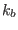

Next: Update Up: Fortran: Module Interface turbulence: Previous: Update Contents
INTERFACE:
subroutine do_kb(nlev,dt,u_taus,u_taub,z0s,z0b,h,NN,SS)DESCRIPTION:
Based on the value of kb_method, this routine calls the appropriate routines for calculating (half) the buoyancy variance  defined in (50). The user has the choice between a simple algebraic expression, described in section 4.7.31, and a dynamic equation for , described in section 4.7.26.
USES:
IMPLICIT NONEINPUT PARAMETERS:
integer, intent(in) :: nlev
REALTYPE, intent(in) :: dt,u_taus,u_taub,z0s,z0b
REALTYPE, intent(in) :: h(0:nlev)
REALTYPE, intent(in) :: NN(0:nlev),SS(0:nlev)
REVISION HISTORY:
Original author(s): Lars Umlauf